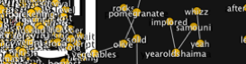
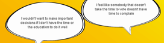
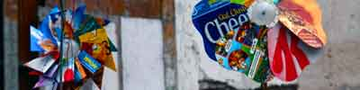
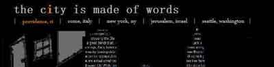
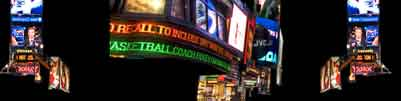
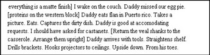
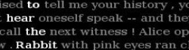

Gallery
|

An audiovisual device for simultaneously navigating two semantic networks generated in real-time. This piece investigates the Israeli-Palestinian conflict as seen simultaneously from opposing views, via data collected from media organizations operating on either side of the border. Can semantic networks help disclose structures that reflect the way we see the world? |

This work references Joseph Cornell's boxes by situating an image in a space that might then evoke an experience. Cornell's boxes capture a certain nostalgia for the past, what one can't quite hold onto but can reconstruct in dream-scale. At each click, this program generates a room with objects in and around it to create a similar effect, situating the viewer in a "remembered" dream space... |
|

Quiet time, free time? There seems to be less and less of it. What do we give up in the race to maximize every second of our lives? What is replaced by the panicked drive for efficiency? NTM explores these questions by mining the web for mentions of tool little time, then re-configuring the results into an evolving poetic conversation... | |

This is a recasting, via RiTa grammars, of a previous piece I'd done in QuickTime. I use one grammar to specify letter substitutions and a 2nd to set/trigger the 'buoyancy' states of the passages (e.g, surfacing, floating, sinking). The piece is intended to be ambient, and variably legible. |

Wind Writings borrows and reinterprets the pinwheel icon. Pinwheels are an array of colours that are set to spin and mix with the energy of the wind. In this project I attempted to translate the relationship that pinwheels have with the environment and the wind to give them a voice... |

Missed Connections is a two-channel internet-aware software installation that continuously fetches and re-presents the latest posts in the "missed connections" section of Craigslist.org... |
||
|

TCMW explores notions of urban space in the digital age. One enters the name of a real city, and, like Italo Calvino's mirror-city of Valdrada, a digital counterpart is created; a socio-cultural architecture in which the buildings themselves are visual poetry, composed of relevant words mined from the web in real-time... |

Highway billboards employ a limited vocabulary to produce variations of a simple message intended meant to entice consumption. McDunCo is a program that endlessly recombines the elements of highway signs: -shape, size, background colors, fonts, images, brand names, slogans; to push this logic to the point of irrationality... |

An interactive, recombinant prose-poem |
||

This generative text begins as a short, composed memory. Periodically its words are replaced in real-time by related terms from the Wordnet database. As time progresses the memory drifts into new configurations as new words layer their own semantic associations. Later the text enters a 2nd state, attempting to "remember" its original form, to reconstruct the original memory as 1st composed... |

'Alice Revisited' expands on the first two iterations of "Alignment", giving the reader multiple ways to read Alice in Wonderland by finding sentences vertically in the text's paragraph structure. The result is a block of text that can be read "normally" (left to right, top to bottom), but can also be rearranged (by clicking on white words) to reveal new, vertical sentences for further reading. |

This is a cut-up audio conversation between myself and Robert Creeley. Each time the user clicks the screen, a new poem dialogue is generated by the computer according to a grammar (of sound clips) that I created using the RiTa library and the Sonia audio plugin (Note: the JSyn plugin is required.) |
||
|
|
This project attempts to satirically engage the world of informatics attached to American Presidential political discourse. The generativity enabled by the Processing programming env. and the Rita library work hand in hand to create endless political situations to satiate the ravenous American public... |
SPAMICITY is an interactive visualizer for your Bayesian spam filter. It displays spam messages, marking words that are considered of high 'spamicity' overlayed on the message. To help the filter better help identify spam, click on words and toggle their spamicity between low & hi. |
||
|
|
|
|